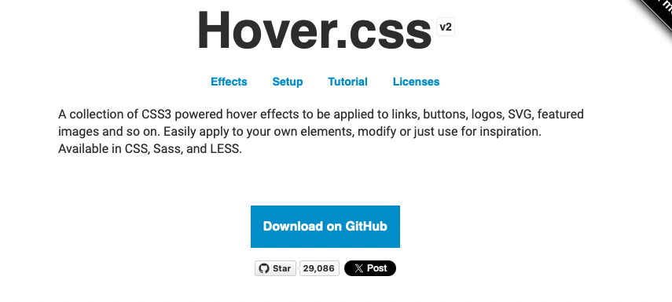
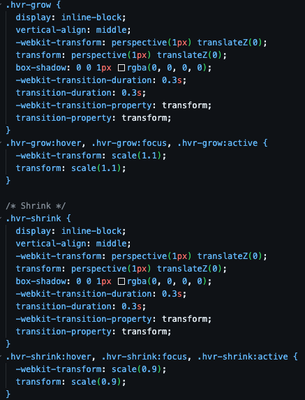

Je kan de Hover Library gebruiken door de hover.css en hover-min.css files te downloaden en te laten linken met je HTML file.
deze files kun je hier vinden door op deze href link te clicken.
Eenmaal je erop hebt geklikt moet je naar Download On Github gaan.

Je download deze file, en sleept de hover.css en hover-min.css css files in jouw document, eenmaal je dit hebt gedaan kan je elke button een animatie geven door deze dezelfde class te laten vernoemen als in de hover.css file.

Bijvboorbeeld, ik heb de eerste button .hvr-grow laten vernoemen zodat hij de hover animatie krijgt. Dit is hoe je gebruikt maakt van deze library.